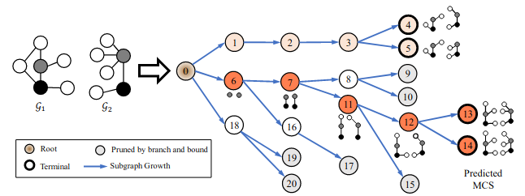
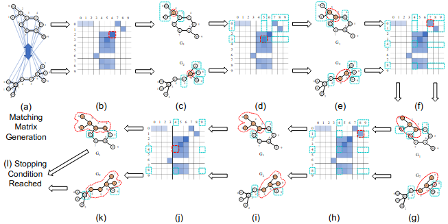
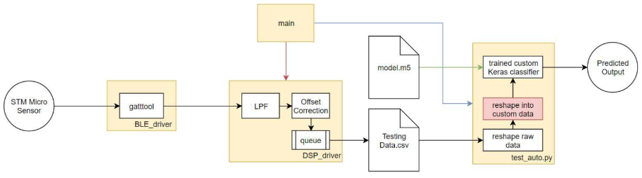

Hi! My name is Derek.
I am currently a second-year Ph.D. student at the
University of California, Los Angeles (UCLA). My
advisors are Prof. Yizhou Sun and Prof. Wei Wang.
I am interested in machine learning and data mining on graphs,
particularly graph representation learning,
generative modeling, and combinatorial search.
If you are also interested in any of these topics and
wish to talk, please reach out to me!
Selected Projects
GLSearch: Unsupervised Maximum Common Subgraph Detection

We propose GLSEARCH, a Graph Neural Net-
work (GNN) based learning to search model. Our
model is built upon the branch and bound algo-
rithm, which selects one pair of nodes from the
two input graphs to expand at a time. Instead of
using heuristics, we propose a novel GNN-based
Deep Q-Network (DQN), which leverages search
information and graph coarsening, to select the node pair,
making the search process faster and more adaptive.
We also leverage the search process to provide
supervision in a pre-training and imitation learning.
Bai, Y.*, Xu, D.*, Sun, Y., & Wang, W. (2021, July). GLSearch: Maximum Common Subgraph Detection via Learning to Search. In International Conference on Machine Learning (pp. 588-598). PMLR. [paper link]
NeuralMCS: Supervised Maximum Common Subgraph Detection

We propose an efficient MCS detection algorithm, NeuralMCS,
consisting of a novel neural network model that learns the
node-node correspondence from the ground-truth MCS result,
and a subgraph extraction procedure that uses the neural
network output as guidance for final MCS prediction, with
a hierarchical loss function capturing equivalent ground
truths at different granularities.
Bai, Y.*, Xu, D.*, Gu, K., Wu, X., Marinovic, A., Ro, C., Sun, Y., & Wang, W. (2019). Neural maximum common subgraph detection with guided subgraph extraction. [paper link]
Embedded Machine Learning on STM Sensortile

I designed and implemented a real-time motion recognition
system using CNNs and LSTMs to classify 9DOF signals, with
heavy data augmentation through additive Gaussian noise and
signal shifting. The system used BLE communication to relay
sensor data to compute resources, and digital signal
processing via band-pass filtering and boxcar smoothing to
clean raw data.
[Tutorials link][GitHub link]
Work Experience
Uber Technologies (Summer 2021)
Machine Learning Engineering Intern
I worked on an information theoretic approach to AutoML, and implemented a functioning highly-scalable model and feature selection system that identified optimal geospatial features for production.
Uber Technologies (Summer 2020)
Software Engineering Intern
I analyzed pricing policies with the data science team and implemented a new end-to-end product in Python, Java, Go, JS, and SQL.
NASA Jet Propulsion Laboratory (Summer 2019)
Software Engineering Intern
I designed and developed a new programming language for compiling and verifying sattelite command files then ingesting them into a database.
NASA Jet Propulsion Laboratory (Summer 2018)
Software Engineering Intern
I developed a reverse data compilation engine to verify data packets between mission control and satellites.
Teaching Experience
CS30: Introduction to Computer Science (Summer 2021)
I set up the final project, a coding competition, covering various search algorithms: BFS, DFS, Best-First Search, Djikstra's, and A*.
E96C: Introduction to Engineering Design (2017-2020)
I helped debug software and hardware errors for students developing an embedded machine learning motion recognition system.
Honors and Awards
- NRT MENTOR Fellowship
- KDD Student Travel Award
- Kenneth I. Friedman Endowed Scholarship
- NSF REU Program
- 1st Place UCLA Micromouse Internal
- UPE and HKN Honor Societies
{kind=link}
{kind=link}
{kind=link}